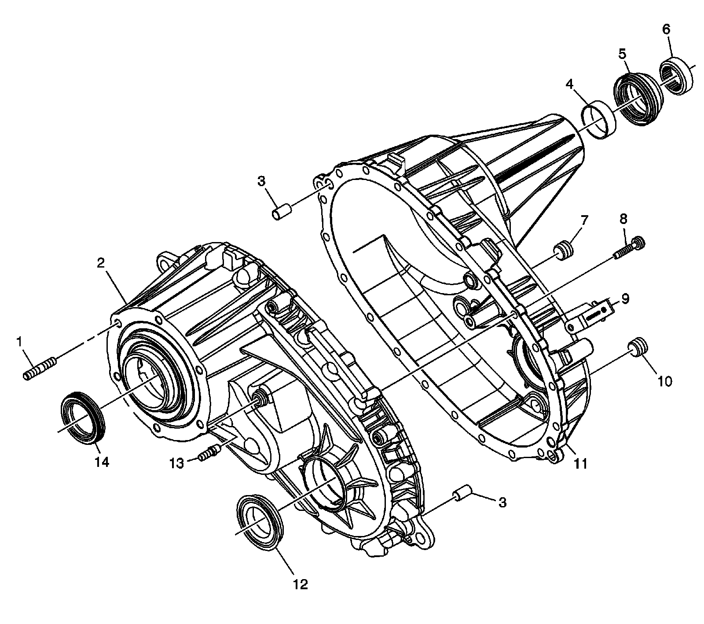
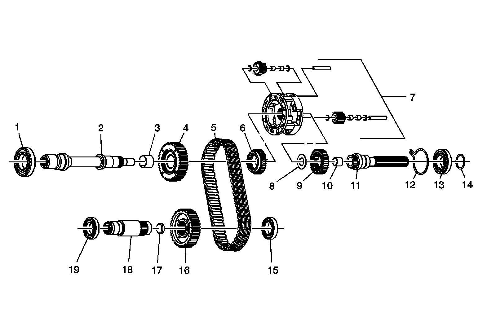

Transfer Case
Transfer Case Disassembled View
Case Components:

1 - Adapter Stud
2 - Front Case Half
3 - Location Pin
3 - Location Pin
4 - Rear Output Shaft Bushing
5 - Rear Output Shaft Seal
6 - Shipping Seal
7 - Fill Plug
8 - Case Half Bolt
9 - Wiring Harness Bracket
10 - Drain Plug
11 - Rear Case Half
12 - Front Output Shaft Seal
13 - Vent
14 - Input Shaft Seal
Internal Components:

1 - Input Gear Bearing
2 - Input Shaft
3 - Drive Sprocket Bushing
4 - Drive Sprocket
5 - Drive Chain
6 - Front Sun Gear
7 - Planetary Differential Assembly
8 - Rear Sun Gear Thrust Washer
9 - Rear Sun Gear
10 - Input Shaft Rear Support Bushing
11 - Rear Output Shaft
12 - Rear Output Shaft Bearing Outer Retaining Ring
13 - Rear Output Shaft Bearing
14 - Rear Output Shaft Bearing Retaining Ring
15 - Front Output Shaft Rear Bearing
16 - Driven Sprocket
17 - Front Output Shaft Cup Plug
18 - Front Output Shaft
19 - Front Output Shaft Front Bearing